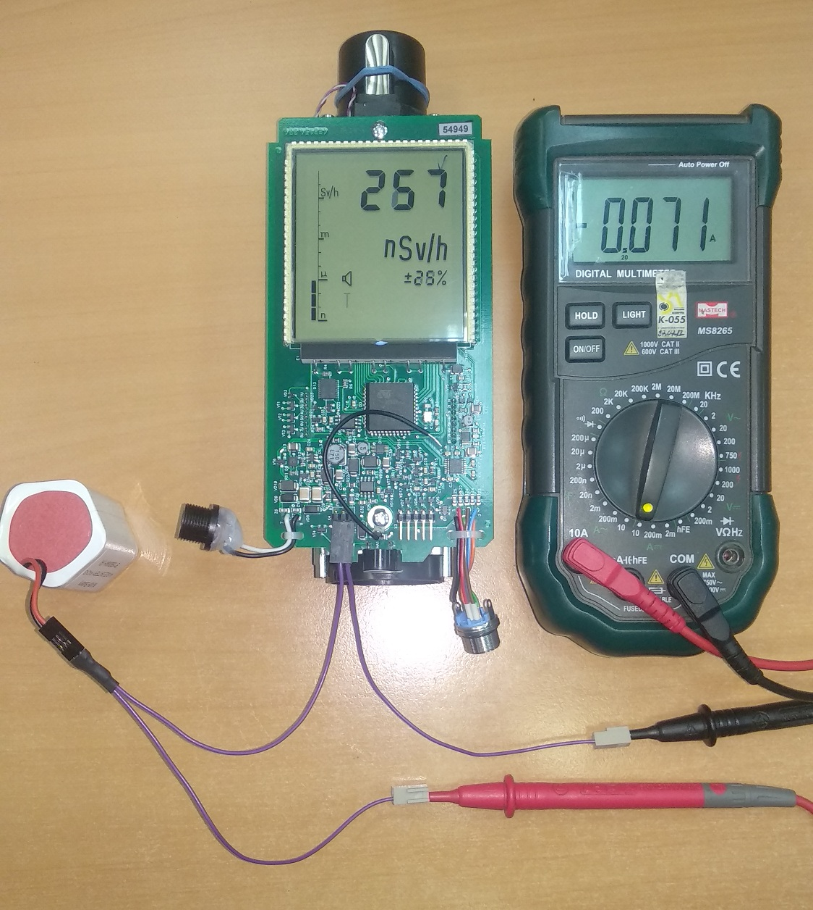

Проверка тока потребления и тока заряда БА ДКР-АТ1103М
- включить в разрыв цепи «+» БА амперметр
- включить ДКР и измерить его ток потребления, значение которого должно быть не более 100 мА; 
- Подключить адаптер питания 12В и измерить ток заряда БА, значение которого должно быть примерно равно 500мА(??????????????)